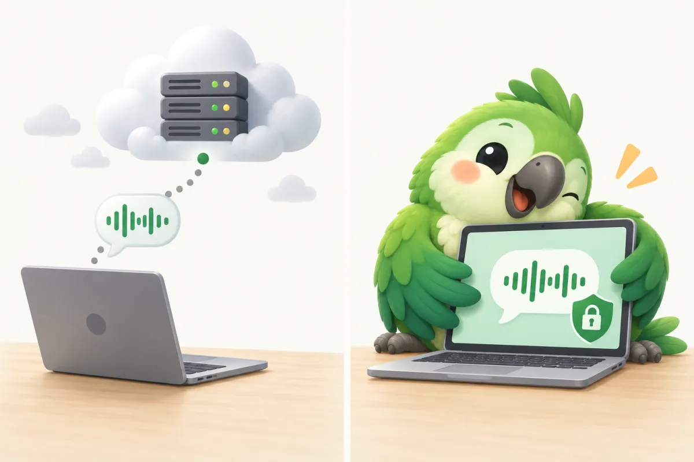
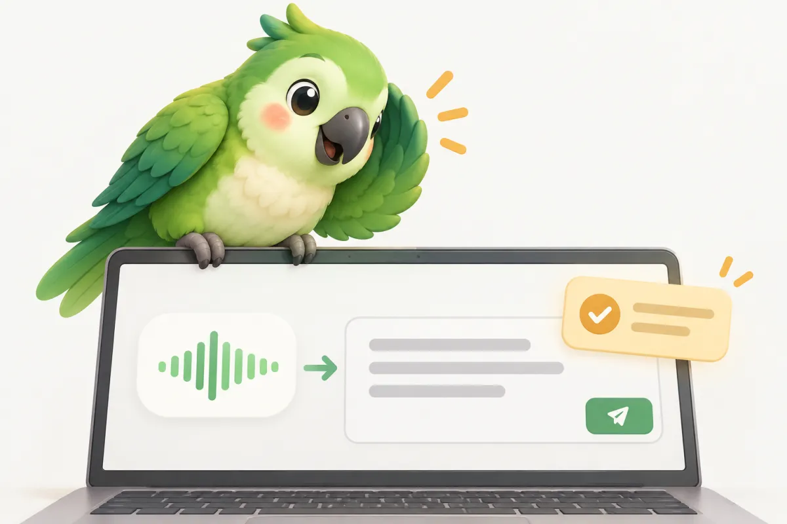

iPhoneのカメラでスキャンParroting iPhone版 · 買い切り800円
iPhoneのカメラでスキャンParroting iPhone版 · 買い切り800円私はSona Orbitで、Parrotingを一人で開発している個人開発者です。Parrotingは本サイトの自社製品です。オープンソースのHandyを基にしています。情報の確認日：2026年10月31日。料金は米ドル表記です。変更されることがあるため、各社の公式サイトをご確認ください。ほかのツールについては、公式情報で確認できた内容だけを記載し、それぞれにリンクを付けています。
1. まず結論：用途別の選び方
- 完全無料で登録したくない：macOS標準の音声入力、Handy、Parroting。
- 音声をアップロードしたくない：ローカルモデルを使うHandy、VoiceInk、Superwhisper、OpenWhispr、Parroting。ただし、macOSの音声入力の「中国語（台湾）」は、Appleのデバイス上で認識する言語の一覧に含まれていません。
- Windowsやスマートフォンでも使いたい：Typeless、Wispr Flow、Superwhisper、OpenWhispr。
- 買い切りがいい：VoiceInk（25ドルから）、Superwhisperの永続ライセンス（249.99ドル）。
- 繁体字中国語や台湾の用字が必要：Parrotingは繁体字（台湾の用字）への変換を内蔵しています。ほかのツールは繁体字での出力を公式に説明していません。Whisper系モデルでは簡体字が混ざることもあるため、先に試してください。
- 話すだけで整った文章にしたい（不要な言葉の削除や体裁の調整）：TypelessとWispr Flowはクラウドで対応します。Superwhisper、Handy、Parrotingは、自分で選んだAIサービスへの接続が必要です。
2. 比較表
| ツール | 対応環境 | 無料プラン | 有料プラン（米ドル） | 音声認識の場所 | 繁体字中国語での出力 | オープンソース |
|---|---|---|---|---|---|---|
| Typeless | Mac、Windows、Linux、iOS、Android | 週ごとの文字数制限あり（公式比較表では2,000語） | Proは年払いで月12、月払いで30 | クラウド | 台湾・香港を選択可能（第三者レビューによる）。簡体字が時々混ざるとの報告あり | いいえ |
| Wispr Flow | Mac、Windows、iPhone、Android | パソコンは週2,000語、スマートフォンはそれより少ない | Proは月15または年144 | クラウド | 公式の説明なし | いいえ |
| Superwhisper | Mac、Windows、iOS、Android | ローカルのWhisperモデルは無制限。Pro機能は最初の3,000語を無料で試用可能 | 月8.49、年84.99、永続ライセンス249.99 | ローカルまたはクラウド | 公式の説明なし | いいえ |
| VoiceInk | Mac（Appleシリコン） | 無料試用 | 買い切り25から | ローカル | 公式の説明なし | はい（GPL-3.0） |
| Handy | Mac、Windows、Linux | 完全無料 | — | ローカル | 公式の説明なし | はい（MIT） |
| OpenWhispr | Mac、Windows、Linux | ローカルモデルは無制限。自分のAPIキーを使ったクラウド利用も無制限 | Proは年80 | ローカルまたはクラウド | 公式の説明なし | はい（MIT） |
| macOSの音声入力 | Macに標準搭載 | 無料 | — | 一部の言語はローカル。中国語（台湾）はローカル処理の一覧に含まれない | 中国語（台湾）に対応 | いいえ |
| Parroting | Mac（Appleシリコン、macOS 11以降）、iPhone（iOS 26以降） | Mac版は完全無料 | iPhone版は買い切り4.99 | ローカル | 繁体字（台湾の用字）と簡体字への変換を内蔵 | いいえ（オープンソースのHandyを基に開発） |
3. Typelessの現状：料金とプライバシーをめぐる議論
TypelessはMac、Windows、Linux、iOS、Androidに対応しています。「嗯」「呃」のような不要な言葉を取り除き、話の途中での言い直しを認識します。箇条書きへの整理、Appごとの口調調整、翻訳、個人辞書にも対応しています。料金ページでは、Proは年払いなら1人あたり月12ドル、月払いなら30ドルです。無料版の説明には「文字数に制限あり」とだけ書かれていますが、同じページの比較表には週2,000語とあります。新規ユーザーには3日間のPro試用があります。
検索で見かける「Typelessをめぐる議論」は、2026年2月に起きました。日本のエンジニアと台湾の開発者Jason Chienが相次いで分析を公開しました。音声認識がローカルでは行われず、音声がサーバーに送られること、閲覧したURLがローカルのデータベースに保存されること、マイク以外にも権限が宣言されていることを指摘しています。両者とも、キー入力の記録は技術的には可能だと述べたものの、実際に行われたことは確認していません（KOCPCによるまとめ）。Typelessは公式サイトに詳細な技術的回答を掲載していません。クリエイターを通じて、指摘は正しくなく、Appが求めるのはマイクとアクセシビリティの権限だけだと伝えています。
現在のプライバシーポリシー（2026-10-13更新）には、音声をクラウドサーバーでリアルタイムに処理し、音声と文脈データは保持しないと書かれています。また、使用中のAppと関連するテキストを読み取り、MicrosoftやGoogleなどのクラウドAIを利用するとしています。顧客や患者の情報、会社の機密情報をよく音声入力するなら、このクラウド処理が自分の規則に合うか確認してください。

4. Wispr Flow：Typelessに最も近い選択肢
Wispr Flowの機能はTypelessによく似ています。不要な言葉の削除、句読点の追加、言い直しの認識、Appごとの書き方の変更に対応し、辞書は使う言葉を自動で学びます。公式のプライバシーページには、認識は常にクラウドで行うと書かれています。モデルの改善への協力をオフにする設定もあります。無料版はパソコンで週2,000語まで。Proは月15ドルまたは年144ドルです。公式には中国語対応とありますが、画面表示は中国語に対応しておらず、繁体字と簡体字のどちらで出力するかも説明されていません。
5. Superwhisper：ローカルモデルとカスタムモード
Superwhisperはローカルモデルを使えます。その場合、公式には「音声と文字起こしはデバイスの外に出ない」とあります。クラウドや自分のAPIキーも利用できます。無料版ではローカルのWhisperモデルを無制限に使えます。Pro（月8.49ドル、年84.99ドル、永続ライセンス249.99ドル）では、自分のAI用APIキー、英語への翻訳、ファイルの文字起こしなどが使えます。公式は、ローカルモデルはAppleシリコン搭載Macで最もよく動作すると説明しています。中国語を繁体字で出力するには、カスタムモードのプロンプトで自分で指定する必要がありますが、公式の説明はありません。
6. VoiceInk：オープンソースの買い切り型
VoiceInkはMac専用で、音声をローカルで認識します。AppやURLに応じたモードの切り替え、画面上の内容を使った文脈の把握、個人辞書に対応しています。料金は買い切りで、Mac 1台は25ドル、2台は39ドル、3台は49ドルです。14日以内なら返金できます。コードはGPL-3.0で公開されています。比較的新しいmacOSが必要です（公式サイトでは14.4以降、GitHubでは15以降）。
7. HandyとOpenWhispr：無料のオープンソース
Handyは完全無料のMITライセンスのオープンソースソフトウェアです。Mac、Windows、Linuxに対応し、完全にオフラインで動きます。ショートカットキーを押して話すと、使用中のAppにテキストをペーストします。機能は意図的に文字起こしに絞られています。話し言葉を整えたい場合は、自分で選んだAIサービスに接続できます。ParrotingはHandyを基に開発しています。
OpenWhisprもMITライセンスのオープンソースです。ローカルモデルと、自分のAPIキーを使ったクラウド利用は無制限です。AIによる文章の整理と、修正から学ぶ辞書もあります。公式のクラウドを使う場合、無料版は週2,000語まで。Proは年80ドルです。
8. macOS標準の音声入力：まず試したい選択肢
インストール不要で無料、時間制限もなく、文字を入力できる場所ならどこでも使えます（「Macでメッセージや書類を音声入力する」（Apple サポート））。注意点は2つあります。AppleのmacOSの機能提供状況では、「中国語（台湾）」はデバイス上で認識する言語に含まれていません。そのため、音声はAppleのサーバーで処理されます。また、デバイス上でのスペルと句読点の修正は英語のみです。不要な言葉の削除、書き換え、翻訳はできません。
9. Parroting：向いている人、向いていない人
Parrotingは無料のMac用音声入力Appです。右Option＋右Commandを押したまま話し、離すとカーソル位置にテキストをペーストします。音声認識はMac上で行います（SenseVoice、Qwen3-ASR、Breeze-ASRなどのローカルモデルを選択可能）。句読点と中国語・英語の間のスペースを自動で補い、繁体字（台湾の用字）への変換を内蔵しています。簡体字も選べます。送信前の口調ヒントはMac上で動く小さなモデルが判定します。個人辞書とパーソナライズ学習もMac上だけで行います。
向いている人：無料で使いたい人、登録したくない人、音声をアップロードしたくない人。主に繁体字中国語や中国語と英語が混じった文章を入力し、使う言葉や口調を少しずつ学んでほしい人にも向いています。
向いていない人：Windows版やAndroid版が必要な人（Mac版はAppleシリコン搭載Macのみ対応。iPhone版はApp Storeで別途購入できます）。設定なしですぐにクラウドAIによる文章の整理を使いたい人も対象外です。AIによる整理と書き換えには、無料のGemini APIキーやApple Intelligenceなど、自分でAIサービスに接続する必要があります。

10. よくある質問
Typelessに無料版はありますか？
あります。無料版には週ごとの文字数制限があり、公式サイトの比較表には2,000語と記載されています。新規ユーザーには3日間のPro試用もあります。
完全無料で登録不要のTypeless代替はありますか？
macOS標準の音声入力、Handy、Parrotingは無料で、アカウント登録も不要です。
音声がアップロードされないツールはどれですか？
ローカルモデルを使う場合、Handy、VoiceInk、Superwhisper、OpenWhispr、Parrotingの音声認識はMac上で完了します。TypelessとWispr Flowは、クラウドで認識すると公式に説明しています。
Typelessは安全ですか？
公式ポリシーでは、音声はクラウドで処理し、音声と文脈データは保持しないとしています。2026年2月の第三者による2件の分析では、権限とローカルの記録について懸念が示されましたが、実際のキー入力の記録は確認されていません。利用するかどうかは、話す内容の機密性によります。
繁体字中国語の入力にはどれが向いていますか？
繁体字（台湾の用字）での出力を公式に明記しているのはParrotingです。macOSの音声入力は中国語（台湾）に対応しています。ほかのツールは公式の説明がないため、普段使う文で何度か試すことをおすすめします。